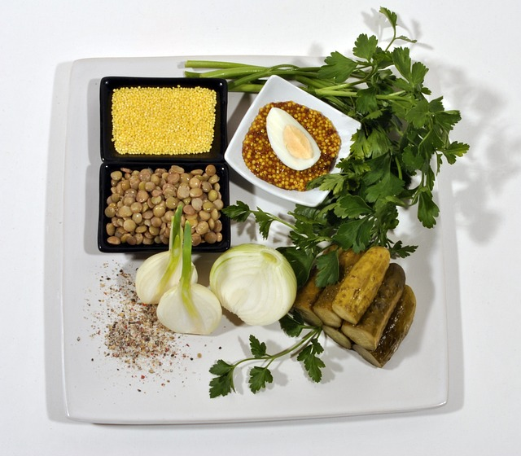

Almuerzos saludables
- 
Sandwich de Pollo
Ingredientes:
- 1 pechuga de pollo
- Sal de mar, pimienta y orégano al gusto
- 1 cucharada de mantequilla
- 2 rebanadas pan de grano entero
- 1 cucharadita mostaza Dijon
- Lechuga
- 2 rebanadas de tomate
- 3 rebanadas de pepino
- ¼ Aguacate
- 1 cucharadita de vinagre de manzana
- 1 cucharadita de aceite de oliva
Modo de preparación:
- Calentar un sartén con mantequilla o aceite de oliva.
- Sazonar por ambos lados el pollo con sal de mar, pimienta y orégano. Cocinar hasta el término deseado.
- Cortar el pollo en tiras.
- Tomar los dos panes de grano entero y untar mostaza Dijon.
- Colocar dentro de los panes la lechuga, tomate, pepino, pollo y aguacate.
- Termina el sándwich con una cucharada de aceite de oliva y 1 cucharada de vinagre de manzana.
Volver al Inicio.
Ensalada de Lentejas
Ingredientes:
- 2 tazas de lentejas.
- 1 taza zanahoria rallada.
- 1 taza tomates cherry.
- Cilantro picado al gusto.
- 2 cucharadas aceitunas verdes.
- Sal y pimienta.
- 1 huevo cocido.
- Lechugas mixtas al gusto.
Aderezo:
- 1 limón
- 1 cucharada aceite de oliva
- 1 cucharada miel de maple
- 1 cucharada mostaza
- Sal y pimienta al gusto
Modo de preparación:
- En un tazón mezclar las lentejas, zanahoria, tomates, cilantro y aceitunas. Sazonar con sal y pimienta. Revolver muy bien.
- En un plato hondo poner una cama de lechugas mixtas y sobre ella colocar la mezcla de lentejas.
- Cortar un huevo cocido y agregar a la ensalada.
- Para hacer el aderezo mezclar muy bien todos los ingredientes y verter sobre la ensalada.
Volver al Inicio.
Tacos de Lechuga
Ingredientes:
- 1 salmón
- 1 cucharada mantequilla o aceite de oliva
- Sal y pimienta
- Lechuga
- ¼ pepino picado
- 1 tomate picado
- ½ aguacate
Aderezo:
- 1 cucharada aceite de oliva
- 1 cucharadita vinagre de manzana
- Sal y pimienta al gusto
- Paprika al gusto
Modo de preparación:
- Sazonar el salmón con sal y pimienta y cortar en cuadritos.
- En un sartén con mantequilla cocinar el salmón durante 6-7 minutos.
- Tomar hojas de lechuga bola (como la tortilla) y colocar dentro del taco el salmón, pepino, tomate y aguacate.
- Para hacer el aderezo mezclar muy bien todos los ingredientes y guardar a un lado para sumergir los tacos.
Volver al Inicio.
Ensalada de Tacos
Ingredientes:
- ¼ libra carne molida
- 1 cucharada mantequilla
- Sal y pimienta al gusto
- Paprika y orégano al gusto
- Lechuga
- ¼ taza frijol negro
- ¼ taza elote amarillo
- 1 tomate picado
- ¼ aguacate
- ½ chile serrano picado
- Cilantro picado al gusto
Aderezo:
- ¼ taza semillas de calabaza
- Cilantro al gusto
- 1 limón
- Sal y pimienta
- ½ chile Serrano
- 2 cucharaditas de aceite de oliva
- 2 cucharadas de agua
Modo de preparación:
- En un sartén con mantequilla cocinar la carne molida y sazonar con sal, pimienta, paprika y orégano al gusto.
- En un plato hondo colocar una cama de lechuga y sobre ella el elote, los frijoles, tomate, carne molida, aguacate, chile serrano y cilantro.
- Para hacer el aderezo en una licuadora poner las semillas, cilantro, limón, sal, pimienta y chile serrano (al gusto) y mezclar. Después agregar el aceite de oliva y el agua y mezclar de nuevo muy bien.
- Verter sobre la ensalada.
Volver al Inicio.